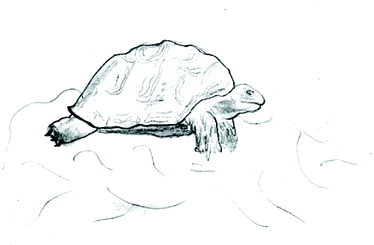

Part 2. Installation
Prev
Next
Part 2. Installation

Table of Contents
2. Overview of OS Linux
1. What is Linux?
2. A Few good reasons to use Linux
3. Fears, Uncertainity and Doubts
3. Installation of your Linux Server
1. Know your Hardware!
2. Creating the Boot Disk and Booting
3. Installation Class and Method (Install Type)
4. Disk Setup- Disk Druid
5. Disk Druid
6. An example
7. Post-Partitioning
8. Components to Install- Package Group Selection
9. Select Individual Package - Part 'A'
10. Select Individual Package -Part 'B'
11. How to use RPM Commands
12. Starting and stopping daemon services
4. Post-Install
1. Software that must be uninstalled
2. Use
RPM
command to uninstall.
3. Software that must be installed
4. Check,Re-confirm
5. Verify,Cross-check
6. some colors for a change
7. Update of the latest software